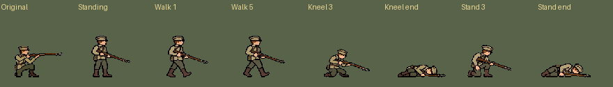
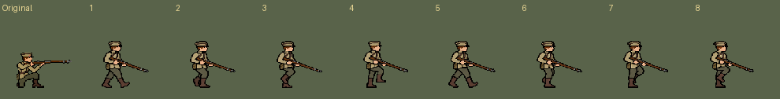
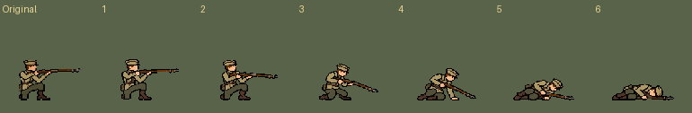
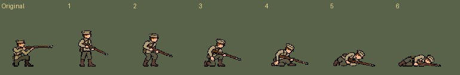

Partizanski strelac · hod i pad
Isti klečeći lik dobija ustajanje, hod sa puškom u niskom spremnom položaju i zaseban pad iz klečanja ili stajanja/hoda. Klipovi su povezani sa Ustankom i Storybook-om; postojeća paljba iz linije je sačuvana.
Ustajanje ima četiri kadra i traje 0,60 s; hod osam kadrova u petlji od 0,80 s; oba pada po šest kadrova tokom 0,76 s i ostaju u završnoj pozi. Povratak u klečanje koristi postojeće kadrove ustajanja obrnutim redom.
Pad se bira prema trenutnom stavu: klečeći nišan ili uspravni hod. U kadru je dodat prazan prostor iznad glave i sa obe strane, uz sačuvano merilo čoveka, dužinu puške i liniju oslonca.
Poređenje u veličini igre

Hod

Pad iz klečanja

Pad iz stajanja / hoda

Ustajanje GIF · Hod GIF · Pad iz klečanja GIF · Pad iz stajanja GIF · Kadrovi i sidrišta · Izvori i promptovi